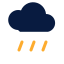
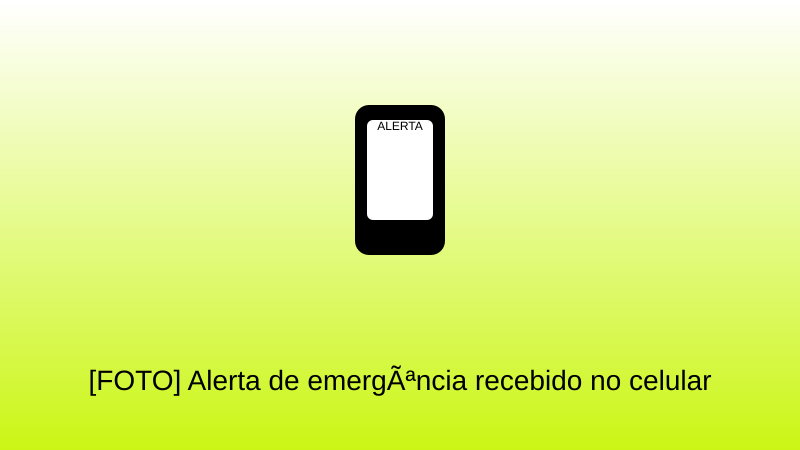

EcoAlerta
Monitoramento do nível da água e alertas em áreas de risco.
Não podemos impedir a chuva. Podemos ajudar a cidade a se preparar.
Leitura simulada para demonstração.

Problema

Enchentes e alagamentos tomam as ruas de São Paulo a cada chuva forte.
Falta comunicação rápida entre Defesa Civil e moradores de áreas de risco.
Tecnologia

Arduino e sensor de nível de água monitoram os pontos de risco.
Python classifica o perigo e a página web informa a população.
-
01
Monitorar
Sensor acompanha o nível da água.
-
02
Identificar
Limites definidos classificam a situação.
-
03
Alertar
LEDs e buzzer sinalizam o risco no local.
-
04
Informar
Esta página apresenta os dados à cidade.
Objetivos

Monitorar o nível da água e classificar em Normal, Atenção, Alerta ou Emergência.
Avisar os moradores com antecedência para reduzir riscos e perdas.
- Normal
- Atenção
- Alerta
- Emergência
Público-alvo
-

Moradores de áreas de risco
Recebem alertas e sabem quando agir.
-

Motoristas e motociclistas
Evitam ruas alagadas e pontos de alagamento.
-

Pedestres e entregadores
Encontram rotas seguras no dia a dia.
Benefícios
-
Tempo para evacuar
Alertas chegam antes da água subir.
-
Rotas seguras
Moradores e motoristas evitam pontos alagados.
-

Apoio à Defesa Civil
Dados locais reforçam a resposta oficial.
-

ODS 11 e ODS 13
Cidades sustentáveis e ação climática.
Cadastre-se para receber alertas


